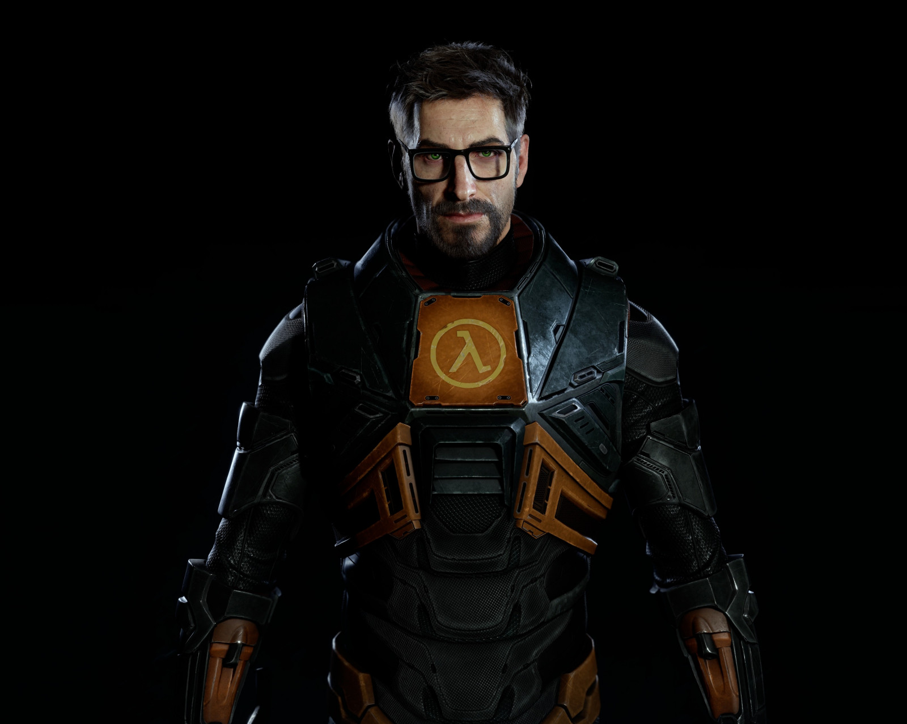

¿Será que el silencio de Freeman encierra a Aphex Twin?
Se comenta en ciertos círculos que el imponente silencio del protagonista de Half-Life podría esconder mensajes ocultos. Algunos apuntes antiguos sugieren que, en lugar de expresarse verbalmente, Freeman se comunica mediante matices y ruidos ambientales.
Diversos análisis han señalado momentos en el juego en los que la música distorsionada recuerda a ciertas pistas de Aphex Twin, como si ambos compartieran un código en común. No es una conclusión firme, pero los patrones se repiten en distintas secuencias.
Además, hay videos y documentos que comparan pausas del juego con fragmentos musicales. Esta coincidencia ha dado pie a debates en foros donde se insiste en la posibilidad de que ambos elementos estén conectados más allá de lo evidente.
